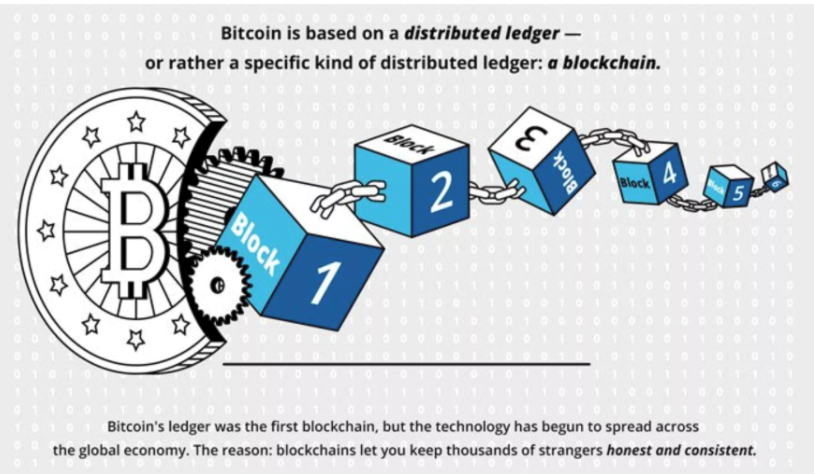

Cryptocurrency is a virtual, intangible and digital currency which is protected by cryptography. This makes cryptocurrency unfeasible to counterfeit or double spend. Some of the examples of cryptocurrencies are- Bitcoin, Ripple, Litecoin, Ethereum and many more. Blockchain technology is used as a ledger for cryptocurrency transactions and is a secured storage system. It is a distributed, decentralized, public ledger. The blockchain is basically made of so many blocks which are the pieces of digital information. The prices of cryptocurrency are influenced by the demand and supply.
Cryptocurrency is a digital asset that easily allows two parties to directly transfer funds without the requirement of any third parties like banks or financial companies. These fund transfers, despite being secured by modern cryptocurrency systems can still be processed with minimal processing fees, helping prevent users from being charged steep fees by third parties for wire transfers. Cryptocurrencies have disadvantages as well. This currency is not easily understandable. People need a wide knowledge to know about the technology and the mechanism of this currency. If a user forgets his password for the wallet, it is impossible to recover the lost data. The price of cryptocurrency is very unpredictable, so the investment in this can be very risky without knowing the factors related to risk. (Technology, 2020)
Currently. cryptocurrencies face some limitations in terms of its technological aspect. However, with time, technology will advance, and help limit the possibility of its digital fortune being erased by a computer crash, or its virtual vault being ransacked by a hacker. But what is harder to overcome is the basic paradox that bedevils cryptocurrencies. This is because, as this digital asset becomes more popular, it is more likely for it to attract regulation and government intervention, eroding the fundamental premise for their existence.
Even though the number of merchants who accept cryptocurrencies have increased, the asset still remains in minority. Excluding its technology adept, the relative complexity of cryptocurrencies compared to conventional currencies is what is likely to deter people. Hence, for it to become a part of the mainstream financial system and be widely used, it would not only have to gain acceptance among consumers, but also satisfy a widely divergent criterion. Wherein it would need to be mathematically complex so that fraud and hacker attacks can be avoided, while being easy for consumers to understand. Similarly, it would also need to be decentralized, but be equipped with adequate consumer safeguards and protection, so that user anonymity is preserved without it being any nefarious activity. Since these are formidable criteria to satisfy, is it possible that the most popular cryptocurrency in a few years’ time could have attributes that fall in between heavily regulated fiat currencies and today’s cryptocurrencies? While that possibility looks remote, there is little doubt that as the leading cryptocurrency at present, Bitcoin’s success (or lack thereof) in dealing with the challenges it faces may determine the fortunes of other cryptocurrencies in the years ahead. (Barone, 2019)
It is forecasted that companies like Uber would be taken over by decentralized organizations that are powered by small contracts of cryptocurrency. In the next 10 years it is seen that the big companies will only operate under a Bitcoin-only policy.
This industry is basically based on the technology known as blockchain. The main focus of this technology is to enable two parties to make a transaction through a secured platform without releasing their identities. Cryptocurrency transactions are not verified by a third party. The systems that make this whole process secured is public keys and private keys, and different forms of incentive systems such as Proof of Work or Proof of Stake. A public key is a user's wallet, or account address, while the private key is only known to the user to sign transactions. Similarly, the Proof of Work (PoW) system is one that is a consensus mechanism, helping prevent denial of service attacks, and other service abuses such as spam. While the Point of Stake (PoS) system is a type of consensus algorithm that aims to achieve distributed consensus through a cryptocurrency blockchain network. (Content, 2018)
This development will affect the world in many ways. There will be a reduction in the risk of fraud because all the transaction made through the blockchain will be secured and encrypted unlike using a bank card on an unsecured website or losing your bank account details. Cryptocurrency will benefit the entrepreneurs and investors. The entrepreneurs will be easily able to raise capital from the investors and the investors will be able to make small amount of investments. This currency is trusted all over the world and is not subject to exchange and interest rates. Due to this factor, it will come up with more stability to the countries that are volatile during inflation. Cryptocurrency is creating many job opportunities for people on the job market, from developers to project managers to miners to data scientists, there is a vast number of jobs available in the cryptocurrency business. (10 Ways Cryptocurrency Will Make The World A Better Place, 2018)
If there is a revolution of cryptocurrency, people might start using it as the main currency. In present there are over 4,000 ATMs for Bitcoin all over the world being the most famous cryptocurrency. People will use this as their medium of exchange for goods and services and it will replace cash. I and my family are interested in buying cryptocurrency as it is the future of investment.